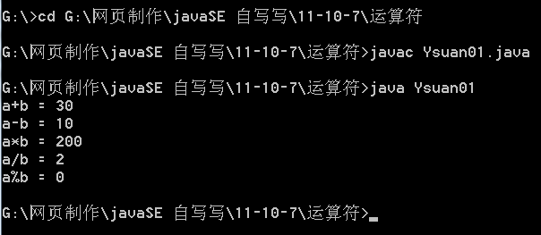
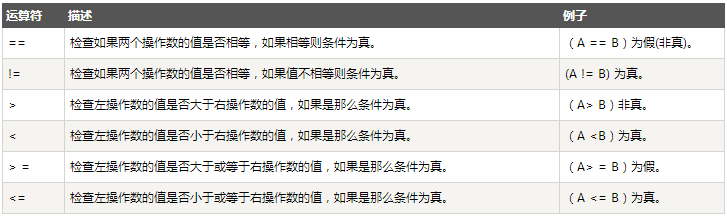
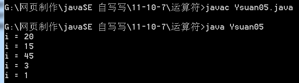

public class Ysuan01{ public static void main(String[] args){ int a = 20; int b = 10; System.out.println("a+b = "+(a+b)); // a+b = 30 System.out.println("a-b = "+(a-b)); // a-b = 10 System.out.println("a*b = "+(a*b)); // a*b = 200 System.out.println("a/b = "+(a/b)); // a/b = 2 System.out.println("a%b = "+(a%b)); // a%b = 0
}
}

①如果++ 出现在后面时
++ 如果出现在变量的后边的时候，【先赋值 后自动+1】
int m = 10; int x = m ++; System.out.println("m = "+m); System.out.println("x = "+x);
输出结果
m=11; x =10;
②如果++ 出现在前边时
++如果出现在变量的前边时，【先自动加1 再赋值】
int d = 10; int e = ++d; System.out.println("d = " + d); System.out.println("e = " + e);
输出结果
c=11;
2.关系运算符

判断两个基本数据类型是否相等，必须使用“==”，"=" 赋值运算符
boolean c = !(a == b); // 如果不知道运算符的优先级 就加括号；
public class Ysuan02{ public static void main(String[] args){ int a = 20; int b = 10; boolean c = !(a == b); System.out.println("c = " + c); System.out.println("a >= b : " + (a >= b)); System.out.println("a < b : " + (a < b)); System.out.println("a <= b : " + (a <= b)); System.out.println("a == b : " + (a == b)); System.out.println("a > b : " + (a > b)); System.out.println("a != b : " + (a != b));
}
}
public class Ysuan05{ public static void main(String[] args){ int i = 10; // 基本赋值运算符
i += 10; System.out.println("i = " + i);
i -= 5; System.out.println("i = " + i);
i *= 3; System.out.println("i = " + i);
i /= 15; System.out.println("i = " + i);
i %= 2; System.out.println("i = " + i);
}
}

5.条件运算符
条件运算符也被称为三元运算符。
基本语法boolean表达式?表达式1:表达式2 （即 表达式?value if true : value if false）
单个字符用char多个字符用String
public class Ysuan06{ public static void main(String[] args){ boolean s = false; String c = s?("真的帮棒"):("你太差劲了"); System.out.println("c = " + c); boolean isSuccess = true; System.out.println(isSuccess?'S':"失败");
}
} 输出：c=太差劲了 S